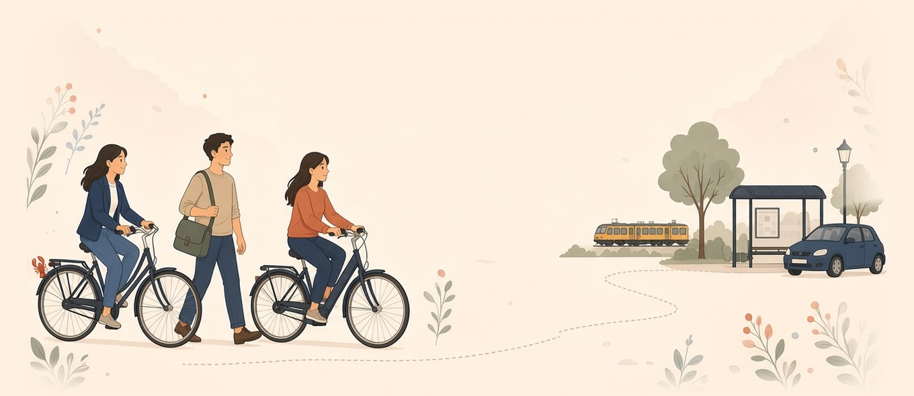

Lobsy laat zien wie jij bent, wat je kunt en welk werk bij je past. Eerst jij, dan de baan. Doe de korte test en zie: dit ben jij.
Eerst jij, dan de baan.
Geen goed of fout. In 3 minuten klaar, zonder account.
Hoe jij werkt en wat je belangrijk vindt, in gewone woorden.
Op de kaart, met je reistijd per fiets, OV of auto.
Vijf zones, dezelfde reis als in de app.
Zie welke banen je echt kunt halen vanaf huis, en hoe lang je onderweg bent.

Alles op één plek, zodra je inlogt.
Zie welke banen je echt kunt halen, met reistijd per fiets, OV of auto.
GratisAlles over jou op één plek. Jij kiest wat je deelt.
GratisStap voor stap ontdekken wie je bent. Pauzeren mag altijd.
GratisSwipe door banen die bij je werk-DNA passen.
GratisDe diepteanalyse na je gratis tests: meer vragen en een persoonlijk rapport om te bewaren.
€ 2,99 eenmaligJe testantwoorden blijven op je eigen telefoon of computer tot je een account maakt.
Een werkgever ziet je antwoorden nooit. In je paspoort kies jij wat je deelt.
Met één knop wis je je antwoorden. Je account verwijderen kan ook, zelf.
Vanaf 13 jaar. Jonger dan 16? Dan vraagt je ouder of voogd eerst toestemming. Geen verborgen kosten.
Niet alleen op papier.
Ja. De test, je account, je paspoort en de banenkaart zijn gratis. Alleen het uitgebreide rapport (de diepteanalyse) kost eenmalig € 2,99.
Nee. De test doe je zonder account. Je antwoorden blijven op je eigen apparaat tot je er zelf een maakt.
Ze blijven op je eigen apparaat tot je een account maakt. Een werkgever ziet ze nooit; in je paspoort kies jij wat je deelt.
Doe de gratis test. Geen account nodig, en je antwoorden blijven van jou.